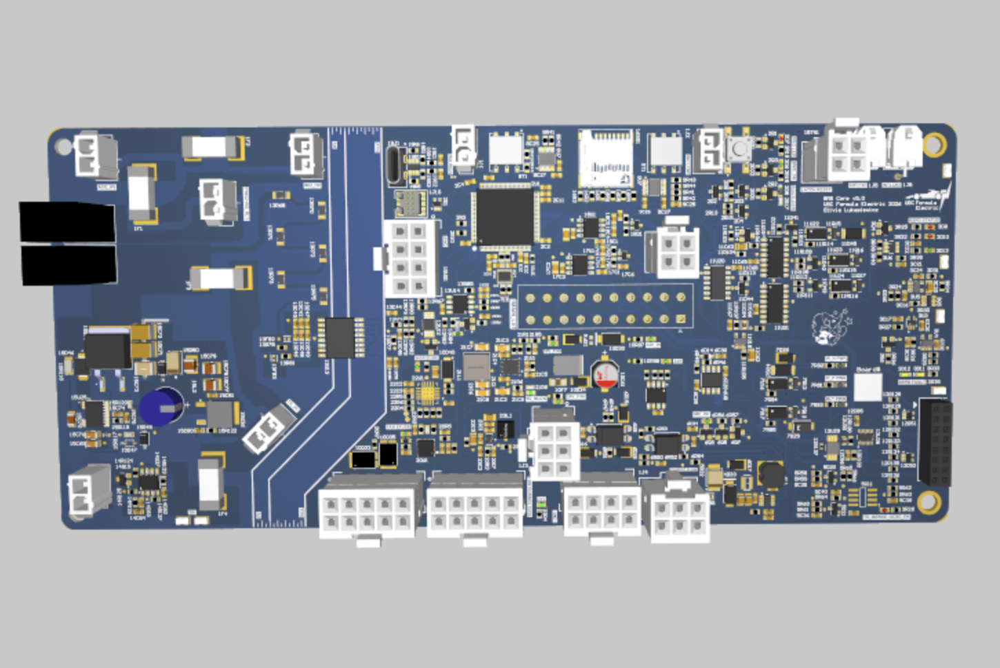
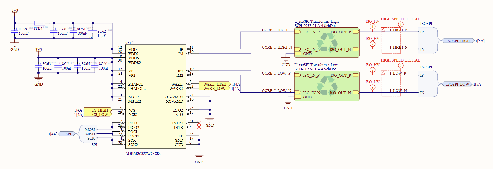
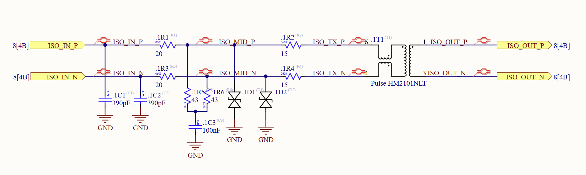
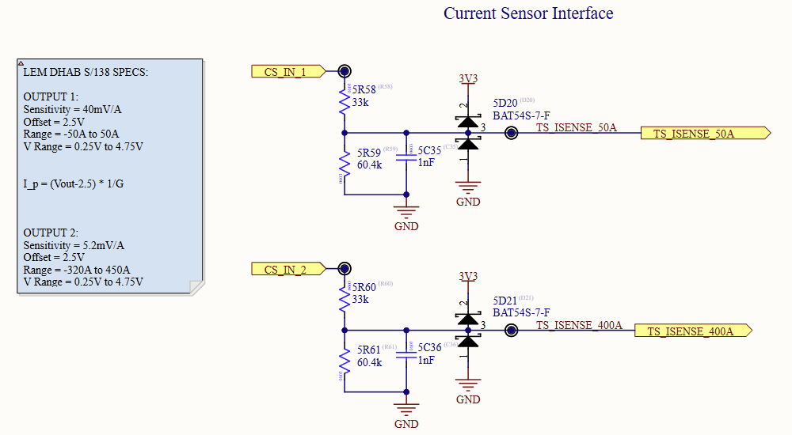

Updated the design of a custom 600V Battery Management System (BMS) PCB using Altium Designer for the UBC Formula SAE Electric vehicle. The board interfaces control electronics with high-voltage power delivery, monitors cell voltages and temperatures, enforces strict galvanic isolation via isoSPI, and transmits real-time telemetry over a CAN network.

600V BMS 3D Board View
Key System Architecture
MCU Control
- Integrated STM32 microcontroller for centralized fault handling and state-of-charge calculation.
- Interfaces with the high-voltage telemetry ICs via isolated SPI protocols.
- Broadcasts real-time battery health data across the vehicle's CAN network.

isoSPI Communication
- Utilizes ADBMS6822 transceivers for robust differential signaling in high-noise environments.
- Implements LC Pi-filters (100nF, MPZ ferrite beads, 4.7µF bypass) to suppress high-frequency switching noise.
- Daisy-chained architecture supports scalable accumulator segment monitoring.

isoSPI Isolation
- Enforces strict galvanic isolation to protect low-voltage control circuitry from 600V transients.
- Optimized PCB layout for differential pairs to minimize parasitic capacitance and signal degradation.
- Meets rigorous FSAE accumulator safety clearance and creepage requirements.

Tractive System Current Sense
Integrated the highly accurate ADBMS2950 IC to process precision high-voltage telemetry. This architecture performs tractive system current sensing through a custom shunt resistor PCB, feeding critical load data to the onboard processor for state-of-charge tracking and overcurrent fault diagnostics.
